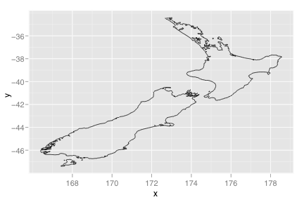
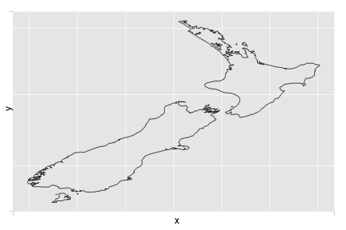
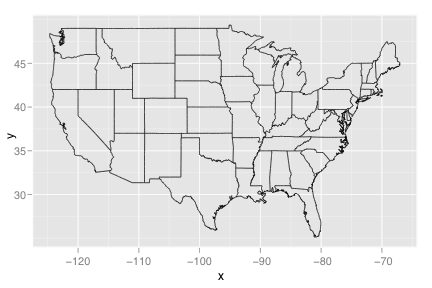
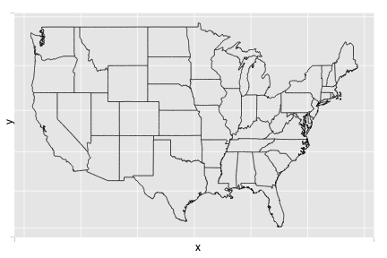
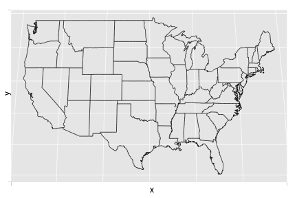
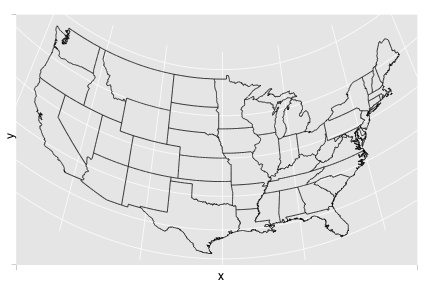
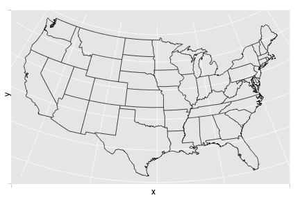
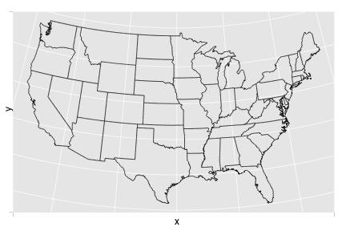
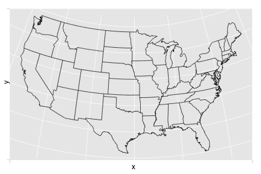
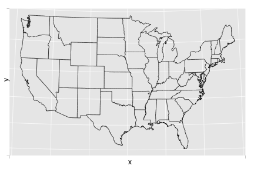

coord_map
Map projections
Details
This coordinate system provides the full range of map projections available in the mapproject package.
This is still experimental, and if you have any advice to offer regarding a better (or more correct) way to do this, please let me know
See layer and qplot for more information on creating a complete plot from multiple components.
Examples
> try_require("maps") > # Create a lat-long dataframe from the maps package > nz <- data.frame(map("nz", plot=FALSE)[c("x","y")]) > (nzmap <- qplot(x, y, data=nz, geom="path"))  > > nzmap + coord_map()  > nzmap + coord_map(project="cylindrical")> nzmap + coord_map(project='azequalarea',orient=c(-36.92,174.6,0))
> > states <- data.frame(map("state", plot=FALSE)[c("x","y")]) > (usamap <- qplot(x, y, data=states, geom="path"))  > usamap + coord_map()  > # See ?mapproject for coordinate systems and their parameters > usamap + coord_map(project="gilbert")  > usamap + coord_map(project="orthographic")  > usamap + coord_map(project="stereographic")  > usamap + coord_map(project="conic", 30)  > usamap + coord_map(project="bonne", 50)  > usamap + coord_map(project="lagrange") 